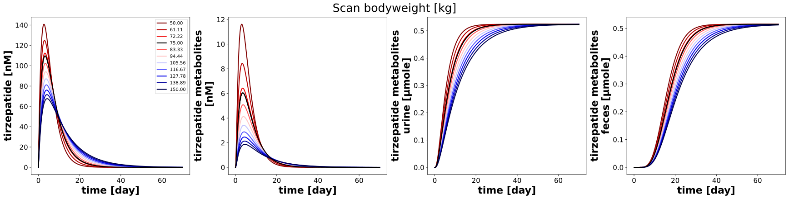
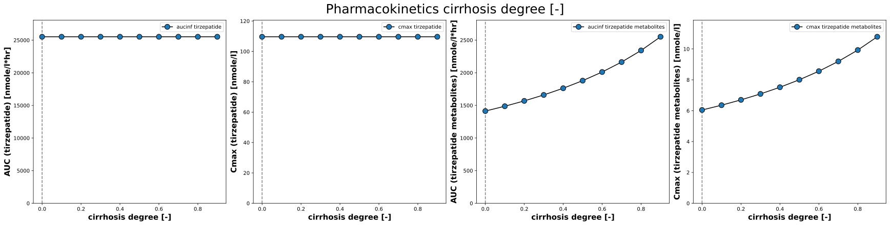
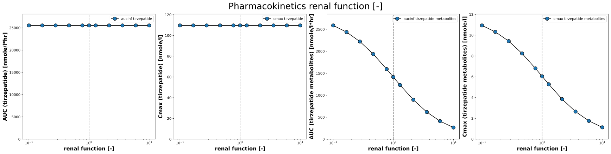
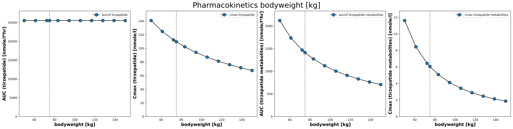

TirzepatideParameterScan
Models
Datasets
Figures
- timecourse__hepatic_scan: TirzepatideParameterScan_timecourse__hepatic_scan.svg
- timecourse__renal_scan: TirzepatideParameterScan_timecourse__renal_scan.svg
- timecourse__bodyweight_scan: TirzepatideParameterScan_timecourse__bodyweight_scan.svg
- pk_hepatic_scan: TirzepatideParameterScan_pk_hepatic_scan.svg
- pk_renal_scan: TirzepatideParameterScan_pk_renal_scan.svg
- pk_bodyweight_scan: TirzepatideParameterScan_pk_bodyweight_scan.svg
{kind=link}
{kind=link}
{kind=link}
{kind=link}
timecourse__hepatic_scan

|
timecourse__renal_scan

|
timecourse__bodyweight_scan
|  |
pk_hepatic_scan
|  |
pk_renal_scan
|  |
pk_bodyweight_scan
|  |
Code
../../../experiments/scans/scan_parameters.py
"""Parameter scans tirzepatide."""
from typing import Dict
import matplotlib.axes
import matplotlib.cm as cm
import numpy as np
from sbmlsim.simulation import Timecourse, TimecourseSim, ScanSim, Dimension
from sbmlsim.plot.serialization_matplotlib import FigureMPL, MatplotlibFigureSerializer
from sbmlsim.plot.serialization_matplotlib import plt
from sbmlutils.console import console
from pkdb_models.models.tirzepatide.experiments.base_experiment import (
TirzepatideSimulationExperiment,
)
from pkdb_models.models.tirzepatide.helpers import run_experiments
class TirzepatideParameterScan(TirzepatideSimulationExperiment):
"""Scan the effect of parameters on pharmacokinetics."""
tend = 10 * 7 * 24 * 60 # 10 weeks
steps = 2000
dose_tir = 5 # [mg]
num_points = 10
scan_map = {
"hepatic_scan": {
"parameter": "f_cirrhosis",
"default": 0.0,
"range": np.linspace(0, 0.9, num=num_points),
# "range": np.logspace(-2, 2, num=21),
"scale": "linear",
"colormap": "Reds",
"units": "dimensionless",
"label": "cirrhosis degree [-]",
},
"renal_scan": {
"parameter": "KI__f_renal_function",
# "range": np.linspace(0.1, 1.9, num=num_points),
"default": 1.0,
"range": np.sort(
np.append(np.logspace(-1, 1, num=num_points), [1.0])
), # [10^-1=0.1, 10^1=10]
"scale": "log",
"colormap": "seismic_r",
"units": "dimensionless",
"label": "renal function [-]",
},
"bodyweight_scan": {
"parameter": "BW",
# "range": np.linspace(0.1, 1.9, num=num_points),
"default": 75.0,
"range": np.sort(
# np.append(np.logspace(-1, 1, num=num_points), [1.0])
np.append(np.linspace(50, 150, num=num_points), [75])
), # [10^-1=0.1, 10^1=10]
"scale": "linear",
"colormap": "seismic_r",
"units": "kg",
"label": "bodyweight [kg]",
},
}
def simulations(self) -> Dict[str, ScanSim]:
Q_ = self.Q_
tcscans = {}
for scan_key, scan_data in self.scan_map.items():
tcscans[f"scan_{scan_key}"] = ScanSim(
simulation=TimecourseSim(
Timecourse(
start=0,
end=self.tend,
steps=self.steps,
changes={
**self.default_changes(),
"SCDOSE_tir": Q_(self.dose_tir, "mg"),
},
)
),
dimensions=[
Dimension(
"dim_scan",
changes={
scan_data["parameter"]: Q_(
scan_data["range"], scan_data["units"]
)
},
),
],
)
return tcscans
def figures_mpl(self) -> Dict[str, FigureMPL]:
"""Matplotlib figures."""
# calculate pharmacokinetic parameters
self.pk_dfs = self.calculate_tirzepatide_pk()
return {
**self.figures_mpl_timecourses(),
**self.figures_mpl_pharmacokinetics(),
}
def figures_mpl_timecourses(self) -> Dict[str, FigureMPL]:
"""Timecourse plots for key variables depending on degree of renal impairment."""
sids = [
"[Cve_tir]",
"[Cve_tm]",
"Aurine_tm",
"Afeces_tm",
]
figures = {}
for scan_key, scan_data in self.scan_map.items():
range = scan_data["range"]
rmin, rmax = range[0], range[-1]
# cmap_str
cmap_str = scan_data["colormap"]
cmap = matplotlib.colormaps.get_cmap(cmap_str)
f, axes = plt.subplots(
nrows=1,
ncols=len(sids),
figsize=(6 * len(sids), 6),
# sharey="row",
# sharex="col",
dpi=150,
layout="constrained"
)
f.suptitle(
f"Scan {scan_data['label']}",
fontsize=self.suptitle_font_size,
)
for kcol, sid in enumerate(sids):
ax: matplotlib.axes.Axes = axes[kcol]
# get data
Q_ = self.Q_
xres = self.results[
f"task_scan_{scan_key}"
]
# scanned dimension
scandim = xres._redop_dims()[0]
parameter_id = scan_data["parameter"]
par_vec = Q_(
xres[parameter_id].values[0], xres.uinfo[parameter_id]
)
time_unit: str = "day"
t_vec = xres.dim_mean("time").to(time_unit)
for k_par, par in enumerate(par_vec):
c_vec = Q_(
xres[sid].sel({scandim: k_par}).values,
xres.uinfo[sid],
).to(self.units[sid])
# 0.1 - 1.9
linewidth = 2.0
if np.isclose(scan_data["default"], par.magnitude):
color = "black"
t_vec_default = t_vec
c_vec_default = c_vec
else:
# red less function, blue more function
if scan_data["scale"] == "linear":
cvalue = (par.magnitude-rmin)/np.abs(rmax-rmin)
elif scan_data["scale"] == "log":
cvalue = (np.log10(par.magnitude) - np.log10(rmin)) / np.abs(np.log10(rmax) - np.log10(rmin))
color = cmap(cvalue)
ax.plot(
t_vec.magnitude,
c_vec.magnitude,
color=color,
linewidth=linewidth,
label=f"{par.m:.2f}"
)
# plot the reference line in black
ax.plot(
t_vec_default.magnitude,
c_vec_default.magnitude,
color="black",
linewidth=2.0,
label="__nolabel__",
)
ax.set_xlabel(
f"{self.label_time} [{time_unit}]",
fontdict=self.font,
)
ax.tick_params(axis="x", labelsize=self.tick_font_size)
ax.tick_params(axis="y", labelsize=self.tick_font_size)
ax.set_ylabel(
f"{self.labels[sid]} [{self.units[sid]}]",
fontdict=self.font,
)
if kcol == 0:
ax.legend()
# # --- colorbar ---
# # 4-tuple of floats rect = (left, bottom, width, height).
# # A new Axes is added with dimensions rect in normalized (0, 1)
# engine = f.get_layout_engine()
# engine.set(rect=(0.0, 0.05, 0.0, 0.0))
# cb_ax = f.add_axes(rect=[0.1, 0.04, 0.8, 0.01])
# cb_ax.set_in_layout(True)
#
# # colorbar range
# if scan_data["scale"] == "linear":
# norm = matplotlib.colors.Normalize(vmin=rmin, vmax=rmax, clip=False)
# elif scan_data["scale"] == "log":
# norm = matplotlib.colors.LogNorm(vmin=rmin, vmax=rmax, clip=False)
#
# cbar = f.colorbar(
# cm.ScalarMappable(norm=norm, cmap=cmap_str),
# cax=cb_ax,
# orientation="horizontal",
# )
#
# # ticks
# ticks = [rmin, rmax]
# if scan_data["default"] not in ticks:
# ticks.append(scan_data["default"])
# ticks = sorted(ticks)
# cbar.set_ticks(ticks)
# console.print(f"{ticks=}")
#
# cbar.set_ticklabels(
# ticks, **{"size": 15, "weight": "medium"}
# )
# cbar.ax.set_xlabel(
# scan_data["label"], **{"size": 15, "weight": "bold"}
# )
# cbar.ax.axvline(x=scan_data["default"], color="black", linewidth=2)
figures[f"timecourse__{scan_key}"] = f
return figures
def figures_mpl_pharmacokinetics(self):
"""Visualize dependency of pharmacokinetics parameters."""
Q_ = self.Q_
figures = {}
parameters_info = [
("tirzepatide", "aucinf"),
("tirzepatide", "cmax"),
("tirzepatide metabolites", "aucinf"),
("tirzepatide metabolites", "cmax"),
]
for scan_key, scan_data in self.scan_map.items():
f, axes = plt.subplots(
nrows=1, ncols=len(parameters_info), figsize=(6 * len(parameters_info), 6), dpi=150,
layout="constrained"
)
f.suptitle(
f"Pharmacokinetics {scan_data['label']}",
fontsize=self.suptitle_font_size,
)
axes = axes.flatten()
for k, (substance, pk_key) in enumerate(parameters_info):
ax = axes[k]
ax.axvline(x=scan_data["default"], color="grey", linestyle="--")
sim_key = f"scan_{scan_key}"
xres = self.results[f"task_{sim_key}"]
df = self.pk_dfs[sim_key]
df = df[df.substance == substance] # get PK for substance
# This was scanned
parameter_id = scan_data["parameter"]
x_vec = Q_(
xres[parameter_id].values[0], xres.uinfo[parameter_id]
)
pk_vec = df[f"{pk_key}"]
pk_vec = pk_vec.to_numpy()
x = x_vec
y = Q_(pk_vec, df[f"{pk_key}_unit"].values[0])
y = y.to(self.pk_units[pk_key])
ax.plot(
x,
y,
marker="o",
linestyle="-",
color="black",
markeredgecolor="black",
markerfacecolor="tab:blue",
markersize=10,
label=f"{pk_key} {substance}"
)
# ax.tick_params(
# axis="x", labelsize=self.tick_font_size
# )
# ax.tick_params(
# axis="y", labelsize=self.tick_font_size
# )
ax.set_xlabel(
scan_data["label"],
fontdict=self.scan_font,
)
ax.set_ylabel(
f"{self.pk_labels[pk_key]} ({substance}) [{self.pk_units[pk_key]}]",
fontdict=self.scan_font,
)
# set axis
ax.set_xscale(scan_data["scale"])
ax.set_ylim(bottom=0, top=1.1 * np.max(y.m))
ax.legend()
figures[f"pk_{scan_key}"] = f
return figures
if __name__ == "__main__":
run_experiments(TirzepatideParameterScan, output_dir=TirzepatideParameterScan.__name__)